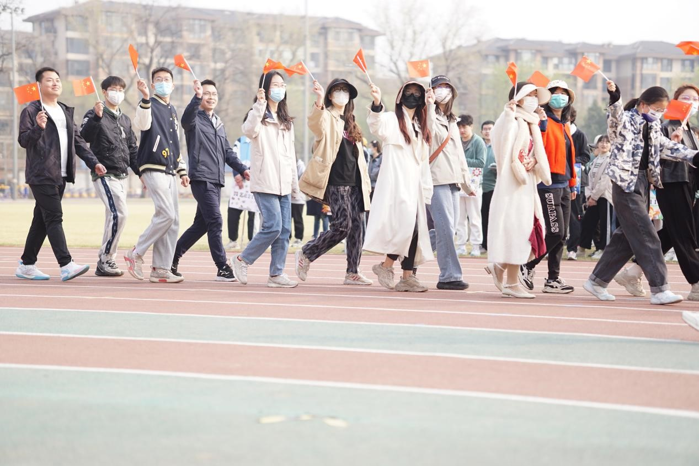

4月1日上午，为贯彻落实党的二十大精神，全面贯彻党的教育方针， 更好地凝聚“强国先强农，农大作先锋”的共识和行动， 园艺学院于西校区操场举办2023年“万众艺心、飞扬追梦”师生运动会。 院长李天红，副院长张小兰、张常青、李威，副书记兼副院长付国强， 本科生班主任、研究生导师、学院行政办公室老师和辅导员等近40位教职工出席活动， 本科生、研究生、教职工共20个队伍参赛， 林涛教授课题组成员作为全场为数不多的研究生团队参加开幕式并报名拔河比赛活动
8时30分，所有人员在升旗台前集合，举行升旗仪式。国旗班队员护送国旗走来，全体师生高唱国歌，行注目礼，气氛庄严肃穆，所有人心潮澎湃，振奋鼓舞。
升旗仪式后，以班级和研究生实验室为单位，学院教师组成教师团队，手举各具特色的班牌，喊出嘹亮的口号经过主席台，展示了青春飞扬，朝气蓬勃的风貌。
拔河比赛需要每个队员都充分发挥力量，同时还需要队员之间的密切配合。 课题组能够在比赛中赢得胜利，说明我们在团队协作和力量运用方面做得非常出色。 这不仅展现了课题组的拔河技能，也展示了课题组的团结精神。 这不仅是一种荣誉，更是团队成员间默契配合与团结协作的体现。
希望我们课题组能够继续保持这种团队精神，在以后的各种比赛和挑战中也能够取得更好的成绩！